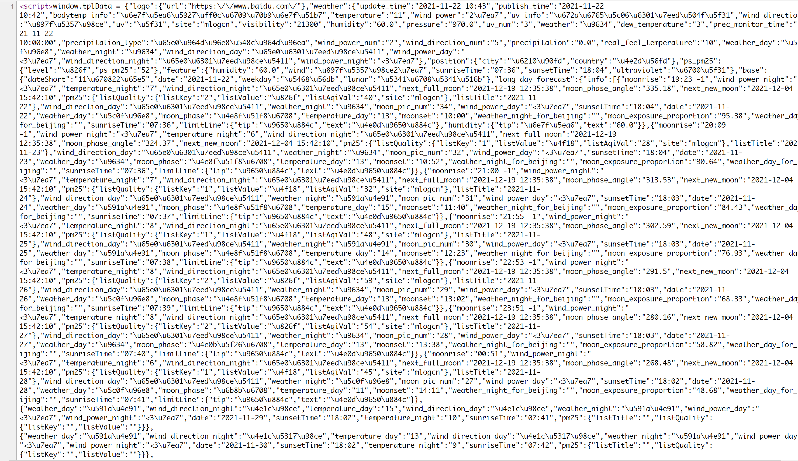
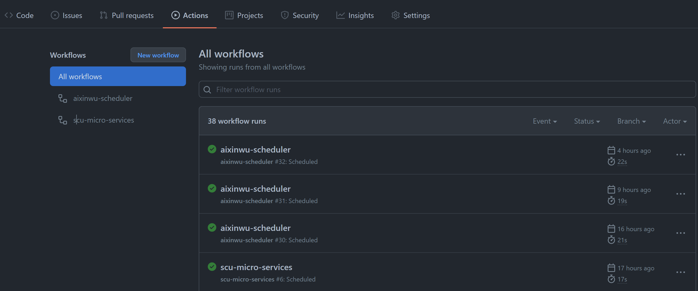

介绍
GitHub Actions 是官方提供的一套 DevOps 工具，可以完成软件开发周期的任务，比如可以实现自动化测试，部署等，简单来理解，我们认为它给我们提供了一个服务器，在上面可以执行一系列的指令(不过会有一些限制)，这就意味着我们可以用来白嫖，比如做定时任务，又不需要自己买服务器。
下面介绍一下如果使用 GitHub Actions 制作一个定时任务，每天定时发布天气情况，当然你学会了之后可以用于签到啊🤭。
前置准备
很简单，只要创建一个 GitHub 仓库，不妨叫做 scheduler， 然后将仓库 git clone 到本地编辑器进行编写即可。
逻辑代码实现
这里我们做一个天气预报，每天都可以定时发送天气预报到我们的邮件里面去。
首先第一步，去哪里获取到天气的信息？
网上有很多天气查询的网站，部分网站提供了对应的 API 接口，但是需要密钥或者限制了调用次数，对于简单的使用来说，比较适合，这里采用爬虫技术从百度天气上获取数据，不用受限于密钥和调用次数。
网站资源找到了，如何拉取数据下来？
一般来说，写爬虫的时候想要获取数据的时候，我们会使用两种方式进行查看：
这里使用第一种方法就可以获取到了，如下为网页源代码，直接包含天气数据：

然后我们可以使用正则表达式，将对应的数据部分获取下来，并且解析为 JSON 数据，大概代码如下：
1
2
3
4
5
6
7
8
9
10
11
12
13
14
15
16
17
18
19
20
21
22
23
24
25
26
27
28
29
30
| var dataPattern = regexp.MustCompile("window.tplData = (.*?);</script>")
func getWeather(city string) (*WeatherData, error) {
resp, err := http.Get(fmt.Sprintf("http://weathernew.pae.baidu.com/weathernew/pc?query=%s&srcid=4982", city))
if err != nil {
return nil, err
}
defer resp.Body.Close()
data, err := io.ReadAll(resp.Body)
if err != nil {
return nil, err
}
match := dataPattern.FindSubmatch(data)
if len(match) == 0 {
return nil, errors.New("Do not find weather data")
}
var res WeatherData
err = json.Unmarshal(match[1], &res)
if err != nil {
return nil, err
}
return &res, err
}
|
解析之后，我们按照自己的想法拼接信息，然后将数据发送过去即可，这里采用邮件发送，代码如下，当然你可以使用包装更好的一些 package，这里直接使用标准库。
1
2
3
4
5
6
7
8
9
10
11
12
13
14
15
16
17
18
19
20
21
22
23
24
25
26
27
28
29
30
31
32
33
34
35
36
37
38
39
40
41
42
43
44
45
46
47
48
49
50
51
52
| func sendMail(to, content string) error {
auth := smtp.PlainAuth("", emailUsername, emailPassword, "smtp.126.com")
msg := fmt.Sprintf("From: %s\r\nTo: %s\r\nSubject: %s\r\nContent-Type: %s; charset=UTF-8\r\n\r\n %s",
emailUsername,
to,
"每日天气",
"text/plain",
content,
)
err := smtp.SendMail("smtp.126.com:25", auth, emailUsername, []string{to}, []byte(msg))
if err != nil {
fmt.Println("send email failed: ", err)
return err
}
return nil
}
const tpl = `{{.city}}天气情况：
今天是{{.date}}，农历{{.lunar}}，天气{{.weather}}，伴有{{.wind_direction}}，预测今日{{.precipitation_type}}
紫外线{{.uv}}, {{.uv_info}}，pm2.5指标为{{.pm25}}, 属于{{.pm25_level}}
`
func main() {
t, err := template.New("weather").Parse(tpl)
if err != nil {
fmt.Println("Parse template failed: ", err)
return
}
var buf = &strings.Builder{}
err = t.Execute(buf, map[string]string{
"city": city,
"date": data.Base.Date,
"lunar": data.Base.Lunar,
"weather": data.Weather["weather"],
"wind_direction": data.Weather["wind_direction"],
"uv": data.Weather["uv"],
"uv_info": data.Weather["uv_info"],
"precipitation_type": data.Weather["precipitation_type"],
"pm25": data.PSPm25.PSPm25,
"pm25_level": data.PSPm25.Level,
})
sendMail(to, buf.String())
}
|
定时任务设置
定时任务是这次的重点，设置起来其实也挺简单的。
首先我们需要创建文件夹 .github/workflows，文件夹下面可以创建工作流程文件，只要是 .yml 文件都会作为一个单独的工作流程文件，每一个文件都会在事件触发的时候执行，比如在提交代码，提PR的时候等。
1
2
3
4
5
6
7
8
9
|
on: push
on: [push, pull_request]
on:
push:
branches:
- main
|
更加具体的语法可以参加官方文档介绍，这里不再赘述，如果我们想要定义一个定时任务，那么触发事件可以类比下面的方式
1
2
3
| on:
schedule:
- cron: '30 5,17 * * *'
|
其中 cron 语法和 Linux 中的一致，如下
1
2
3
4
5
6
7
8
9
| ┌───────────── 分钟 (0 - 59)
│ ┌───────────── 小时 (0 - 23)
│ │ ┌───────────── 日期 (1 - 31)
│ │ │ ┌───────────── 月 (1 - 12 or JAN-DEC)
│ │ │ │ ┌───────────── 星期 (0 - 6 or SUN-SAT)
│ │ │ │ │
│ │ │ │ │
│ │ │ │ │
* * * * *
|
如果你不清楚输出的表示什么时间，那么你可以在 crontab guru 中进行测试。而对于我们的天气预报来说，我们的工作流程文件可以定义为：
1
2
3
4
5
6
7
8
9
10
11
12
13
14
15
16
17
18
19
20
21
22
23
| name: weather-report
on:
push:
paths:
- weather-report/**
- .github/workflows/weather-report.yml
schedule:
- cron: "0 0 * * *"
jobs:
weather-report:
runs-on: "ubuntu-latest"
env:
EMAIL_USERNAME: ${{ secrets.EMAIL_USERNAME }}
EMAIL_PASSWORD: ${{ secrets.EMAIL_PASSWORD }}
TO: ${{ secrets.TO }}
steps:
- uses: actions/checkout@v2
- uses: actions/setup-go@v2
with:
go-version: "^1.17"
- run: go run weather-report/main.go -eu $EMAIL_USERNAME -ep $EMAIL_PASSWORD -to $TO
|
所有代码编写完成之后，push 到仓库中，便可以查看到正在执行的行为。

总结
核心步骤其实很简单：
- 创建仓库，
clone 下来
- 进行逻辑代码编写
- 创建
.github/workflows 目录，并编写工作流程文件
push 代码上去，事件触发时执行
工作流程文件的编写并不是很复杂，如果我们会 docker-compose.yml 的编写，很容易就掌握了基本内容，其他需要的语法到时候翻翻官方文档即可，而且官方提供了大量的模板供使用。
上述的这个定时任务并没有什么很大的使用之处，毕竟人手一台手机，天气点一点就是知道的事了，比这个方便美观多了，其实更重要是学习怎么利用爬虫去获取简单的数据，以及 GitHub Actions 的使用，如果把签到作为定时任务，那么定会得到极大的解放🧐。
不过，GitHub Actions 的使用当然不仅限于此，自动化测试，自动化部署都可以通过它实现~